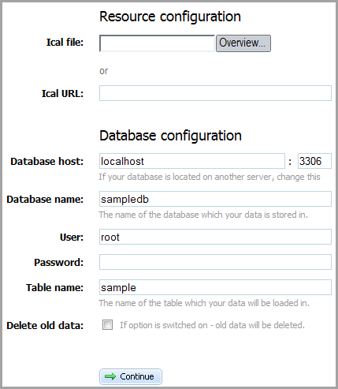

You have the possibility to import/export data of iCal format by using either ready-to-use utility or API methods.
Download the iCal exporter utility: http://dhtmlx.com/x/download/regular/ical2scheduler.zip

The front-end of the utility consists of two parts:
In the first part you set the path to the data. You may do this by either choosing the path from the opened dialog window (Ical file, the button "Overview") or specifying it manually (Ical URL).
The second part contains the standard settings of the database ( host, database and table names, user's name and password), which you want to save the iCal data in. Also here you may set, whether your old data must be deleted or not (Delete all data).
Here you can find all the API methods that can be used to implement iCal export/import in an app.
To initialize iCal exporter/importer, use the following code:
require_once("codebase/class.php");
$export = new ICalExporter();
You can import iCal data using the following methods:
You can export iCal data using the following methods:
A number of code snippets that show how to execute iCal export/import are presented here.
The following code allows you to set the title of imported/exported iCalendar data.
$xml = file_get_contents("events_rec.xml");
require_once("codebase/class.php");
$export = new ICalExporter();
$export->setTitle("Calendar name");
$ical = $export->toICal($xml);
file_put_contents("ical.ics", $ical);
It's an example of events' array that is referred to in import/export data from/to array.
$events = array(
array(
"id" => 1,
"start_date" => "2010-04-05 08:00:00",
"end_date" => "2012-04-09 09:00:00",
"text" => "text1",
"rec_type" => "week_2___3,5",
"event_pid" => null,
"event_length" => 3600
),
array(
"id" => 2,
"start_date" => "2010-04-06 12:00:00",
"end_date" => "2010-04-06 18:00:00",
"text" => "text2",
"rec_type" => "",
"event_pid" => null,
"event_length" => null
),
array(
"id" => 3,
"start_date" => "2010-04-07 12:00:00",
"end_date" => "2010-04-07 18:00:00",
"text" => "text3",
"rec_type" => "",
"event_pid" => null,
"event_length" => null
),
array(
"id" => 4,
"start_date" => "2010-04-08 12:00:00",
"end_date" => "2010-04-08 18:00:00",
"text" => "text4",
"rec_type" => "",
"event_pid" => null,
"event_length" => null
)
);
Use this code to export data from an array to an iCal string:
require_once("codebase/class.php");
$export = new ICalExporter();
$ical = $export->toICal($events);
file_put_contents("ical.ics");
Use this code to export data from XML to iCal:
$xml = file_get_contents("events_rec.xml");
require_once("codebase/class.php");
$export = new ICalExporter();
$ical = $export->toICal($xml);
file_put_contents("ical.ics");
Use this code to export data from iCal to array:
$ical = file_get_contents("ical.ics");
require_once("codebase/class.php");
$export = new ICalExporter();
$events = $export->toHash($ical);
Use this code to export data from iCal to XML:
$ical = file_get_contents("ical.ics");
require_once("codebase/class.php");
$export = new ICalExporter();
$xml = $export->toXML($ical);
file_put_contents("events_rec.xml", $xml);